<!doctype html>
<html lang="en">
<meta charset="utf-8" />
<title>Introduction to web programming</title>

<!-- Mithril HTML Slideshow styles -->
<link href="css/mithril-slideshow.css" rel="stylesheet" />

<!-- Code formatting using highlight.js -->
<link rel="stylesheet" href="css/default.css">
<link rel="stylesheet" href="css/tomorrow.css">
<script src="js/highlight.pack.js"></script>

<!-- Text formatting using Markdown through showdown.js -->
<script src="js/showdown.min.js"></script>


<script data-role="slide" data-markdown type="text/html">
# Introduction to web programming
## JavaScript Frameworks
### Mikael Roos
</script>


<script data-role="slide" data-markdown type="text/html">
# Agenda

* JavaScript Frameworks
* State of JavaScript
* Technology choices
* Mithril - a JavaScript framework

</script>


<script data-role="slide" data-markdown type="text/html">
# Technical architect

* Lets assume you are a technical architect, responsible for your companies technology choice for the coming projects.
* Consider aspects as team mates, education need, technology maturity, cost/gain, attractiveness, and so on.

</script>


<script data-role="slide" data-markdown type="text/html">

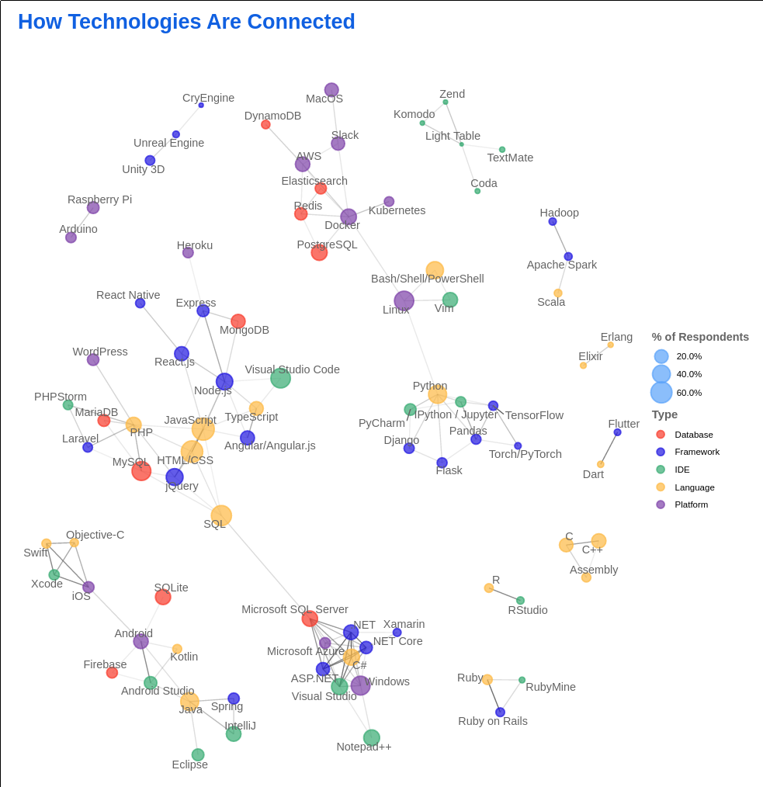

</script>


<script data-role="slide" data-markdown type="text/html">
# Technology adaption

> "The diffusion of innovations according to Rogers. With successive groups of consumers adopting the new technology (shown in blue), its market share (yellow) will eventually reach the saturation level."

</script>


<script data-role="slide" data-markdown type="text/html">

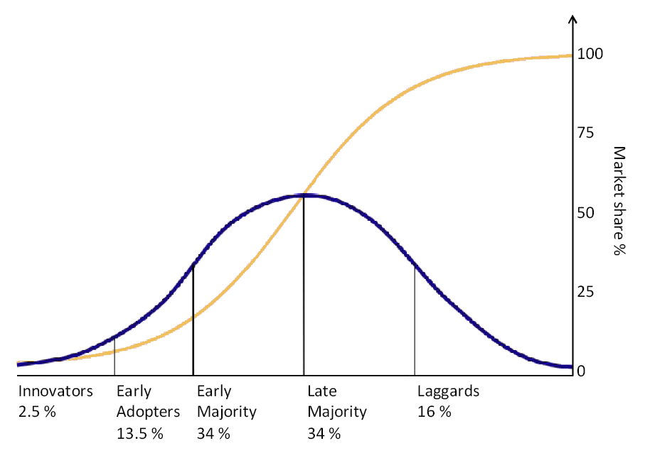

</script>


<script data-role="slide" data-markdown type="text/html">
# "JavaScript is moving in the right direction?"

* 2019 State of JS
    * 2018 - 52% versus 33%
    * 2019 - 21% versus 61%
    * Strongly agree versus Agree

</script>


<script data-role="slide" data-markdown type="text/html">

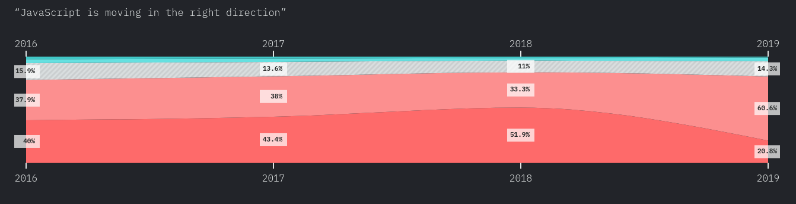

</script>


<script data-role="slide" data-markdown type="text/html">

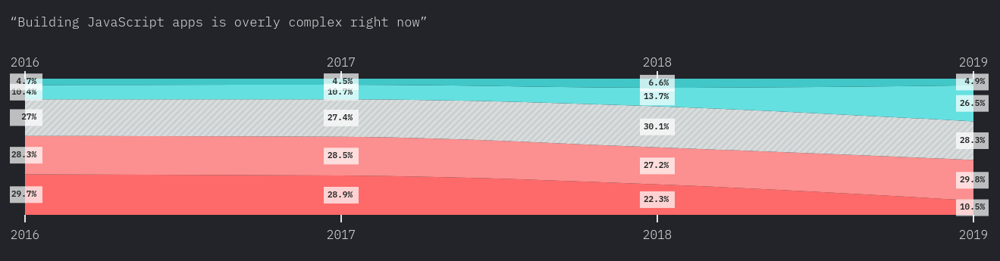

</script>


<script data-role="slide" data-markdown type="text/html">

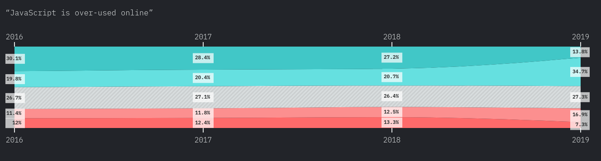

</script>


<script data-role="slide" data-markdown type="text/html">

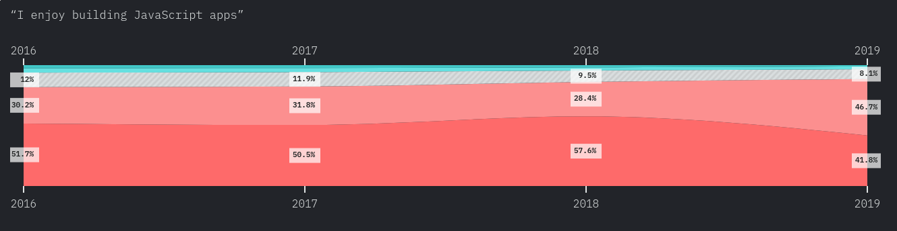

</script>


<script data-role="slide" data-markdown type="text/html">

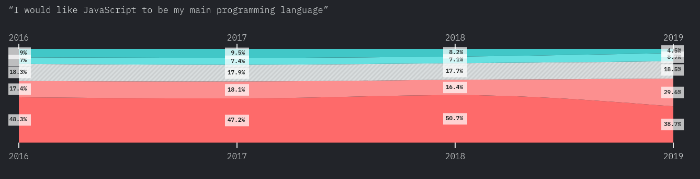

</script>


<script data-role="slide" data-markdown type="text/html">

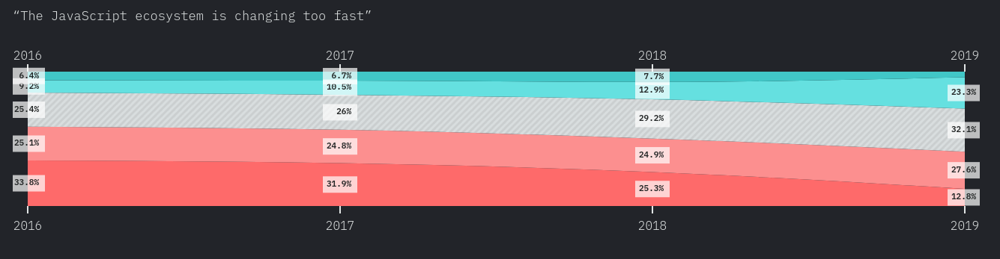

</script>


<script data-role="slide" data-markdown type="text/html">
# Developer Survey Results 2019

* From StackOverflow, about technology
    * [The results](https://insights.stackoverflow.com/survey/2019#technology)

* [Data from the 2020 survey](https://insights.stackoverflow.com/survey/2020#most-popular-technologies)

</script>


<script data-role="slide" data-markdown type="text/html">

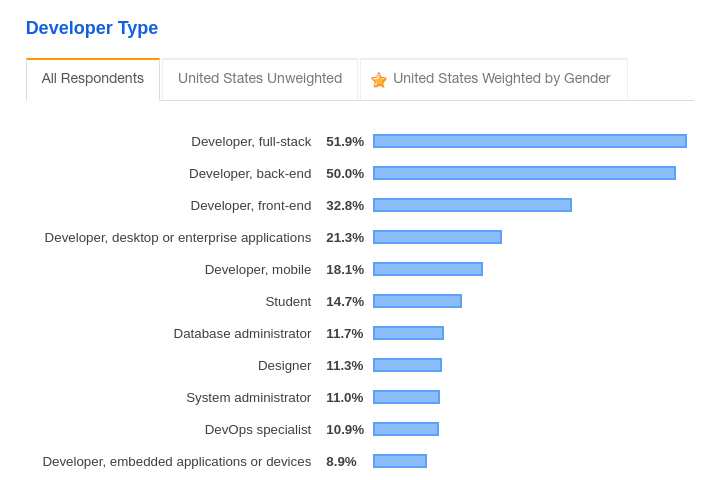

</script>


<script data-role="slide" data-markdown type="text/html">

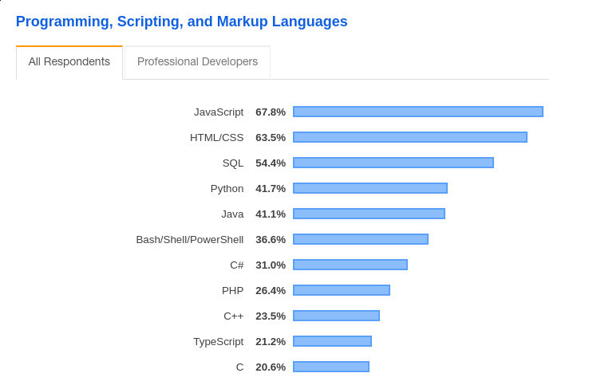

</script>


<script data-role="slide" data-markdown type="text/html">

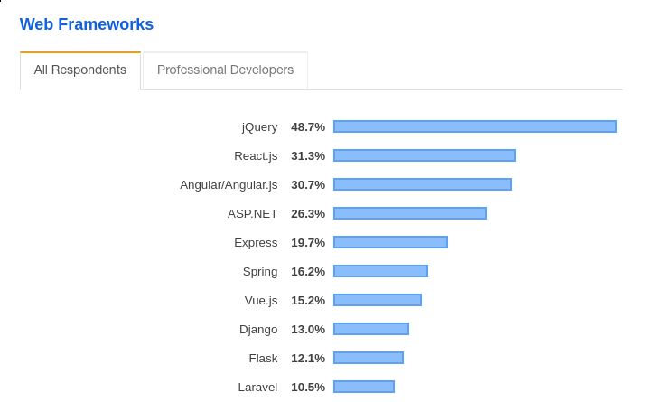

</script>


<script data-role="slide" data-markdown type="text/html">

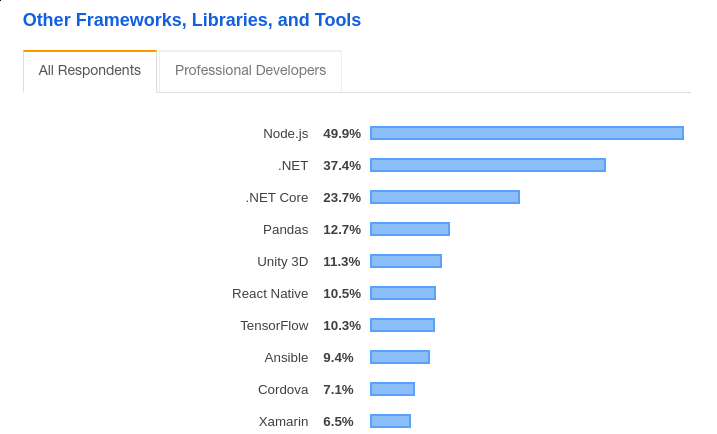

</script>


<script data-role="slide" data-markdown type="text/html">
# [Loved, dreaded, wanted](https://insights.stackoverflow.com/survey/2019#most-loved-dreaded-and-wanted)

* Lets just check out what people says in general.
* Keep in mind, it is peoples opinions, not neccessarily facts, more a hint on where we are going - technology wise.

</script>


<script data-role="slide" data-markdown type="text/html">
# Why should you use a framework?

* Is not plain vanilla JavaScript good enough?

</script>


<script data-role="slide" data-markdown type="text/html">
# Framework architectures

* MVC - Model-View-Controller
* MVVM - Model-View-ViewModel
* MVP - Model-View-Presenter

</script>


<script data-role="slide" data-markdown type="text/html">
# MVC - Model-View-Controller

* Model - data of the application.
* View - the user interface of the app.
* Controller - handles all input (for example, clicks or browser events)

</script>


<script data-role="slide" data-markdown type="text/html">
# MVVM - Model-View-ViewModel

* Model - data of the application.
* View - the user interface of the app.
* ViewModel - similar to a Controller, but acts as a data converter because it passes commands from the View to the Model.

</script>


<script data-role="slide" data-markdown type="text/html">
# MVP - Model-View-Presenter

* Model - data of the application.
* View - the user interface of the app.
* Presenter - responsible for the logic of widgets’ functionality (for example, data storage and loading, app events, data manipulation, etc.)

</script>


<script data-role="slide" data-markdown type="text/html">
# Top JS Frameworks choices

* Results from [2019 State of JS](https://2019.stateofjs.com/)
* Lets briefly review the top candidates

</script>


<script data-role="slide" data-markdown type="text/html">
# TypeScript

* Syntactic sugar on top of JavaScript.
* To enhance structure

</script>


<script data-role="slide" data-markdown type="text/html">
# Frontend framework

* React - A declarative, efficient, and flexible JavaScript library for building user interfaces
* Vue.js - A progressive, incrementally-adoptable framework for building UI on the web

* (Angular)

</script>


<script data-role="slide" data-markdown type="text/html">
# Frontend framework (JSX)

* JSX - A mix of JavaScript and HTML
* Separate UI (separation of concerns)

```
const name = 'Josh Perez';
const element = <h1>Hello, {name}</h1>;

ReactDOM.render(
  element,
  document.getElementById('root')
);
```

</script>


<script data-role="slide" data-markdown type="text/html">
# Data layer

* To keep and maintain the state of the application

* Redux - Predictable state container for JavaScript apps

</script>


<script data-role="slide" data-markdown type="text/html">
# Mobile & Desktop

* React Native (mobile)
* Electron (desktop)

</script>


<script data-role="slide" data-markdown type="text/html">
# Technical architect

* Summarize front end choices
* React/Vue.js + JSX
* TypeScript
* Redux (or skip)
* React Native (mobile)
* Electron (desktop)

</script>


<script data-role="slide" data-markdown type="text/html">

# Final tip

</script>


<script data-role="slide" data-markdown type="text/html">

# Learn how to code in a framework

* Be observant on its architecture and the parts making up the framework.
* Observe when general design patterns are used.

* Design patterns is likely to appear in other frameworks, makes it easier to learn and compare

</script>


<script data-role="slide" data-markdown type="text/html">

# Technologies to adapt

* Linters (code standard, mess detectors, code quality)
* Unit testing (chai, jasmine or other)
* Builders (snowpack etc)
* Docker
* Developer operations
    * Automatization
* (Server side techniques)

</script>


<script data-role="slide" data-markdown type="text/html">

# Lets checkout [Mithril](https://mithril.js.org/)

* Why?

* Just as an example of a small JavaScript framework and the parts of its architecture

</script>


<script data-role="slide" data-markdown type="text/html">

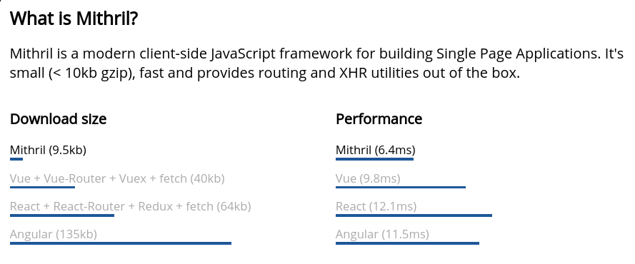

</script>


<script data-role="slide" data-markdown type="text/html">

# Key concepts

* Virtual DOM nodes
* Components
* Lifecycle methods
* Keys
* Auto-redraw system

</script>


<script data-role="slide" data-markdown type="text/html">

# Virtual DOM nodes

* A virtual DOM tree is a JavaScript data structure that describes a DOM tree.
* It consists of nested virtual DOM nodes, also known as vnodes.
* Mithril diffs a vnode tree against its previous version and only modifies DOM elements in spots where there are changes.

</script>


<script data-role="slide" data-markdown type="text/html">

# Components

* Components are a mechanism to encapsulate parts of a view to make code easier to organize and/or reuse.

```
// define your component
var Example = {
    view: function(vnode) {
        return m("div", "Hello")
    }
}

// consume your component
m(Example)
```

</script>


<script data-role="slide" data-markdown type="text/html">

# Lifecycle methods

* Components and virtual DOM nodes can have lifecycle methods, also known as hooks, which are called at various points during the lifetime of a DOM element.
* oninit, oncreate, onupdate and more

</script>


<script data-role="slide" data-markdown type="text/html">

# Keys

*  A key is a way of saying "this DOM element is for the data object with this id"

</script>


<script data-role="slide" data-markdown type="text/html">

# Auto-redraw system

* Mithril employs an auto-redraw system that synchronizes the DOM whenever changes are made in the data layer.

</script>


<script data-role="slide" data-markdown type="text/html">

# Small footprint

* [Small API](https://mithril.js.org/api.html)

</script>


<script data-role="slide" data-markdown type="text/html">

# A hello word example

* Mithril example in the example repo

</script>


<script data-role="slide" data-markdown type="text/html">
# Last words

* Questions on that?

</script>


<script data-role="slide" data-markdown type="text/html">
</script>


<!-- include essential js-script -->
<script src="js/mithril.min.js"></script>
<script src="js/mithril-slideshow.js"></script>
